PERHAPS THE MOST INTUITIVE graph-processing problem is one that you encounter regularly, when using a map application or a navigation system to get directions from one place to another. A graph model is immediate: vertices correspond to intersections and edges correspond to roads, with weights on the edges that model the cost, perhaps distance or travel time. The possibility of one-way roads means that we will need to consider edge-weighted digraphs. In this model, the problem is easy to formulate:
Find the lowest-cost way to get from one vertex to another.
Beyond direct applications of this sort, the shortest-paths model is appropriate for a range of other problems, some of which do not seem to be at all related to graph processing. As one example, we shall consider the arbitrage problem from computational finance at the end of this section.
We adopt a general model where we work with edge-weighted digraphs (combining the models of SECTION 4.2 and SECTION 4.3). In SECTION 4.2 we wished to know whether it is possible to get from one vertex to another; in this section, we take weights into consideration, as we did for undirected edge-weighted graphs in SECTION 4.3. Every directed path in an edge-weighted digraph has an associated path weight, the value of which is the sum of the weights of that path’s edges. This essential measure allows us to formulate such problems as “find the lowest-weight directed path from one vertex to another,” the topic of this section. The figure at left shows an example.
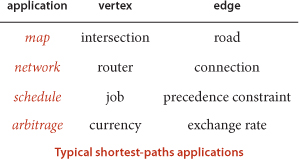
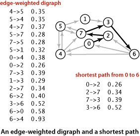
Thus, in this section, we consider classic algorithms for the following problem:
Single-source shortest paths. Given an edge-weighted digraph and a source vertex s, support queries of the form Is there a directed path from s to a given target vertex t? If so, find a shortest such path (one whose total weight is minimal).
The plan of the section is to cover the following list of topics:
• Our APIs and implementations for edge-weighted digraphs, and a single-source shortest-paths API
• The classic Dijkstra’s algorithm for the problem when weights are nonnegative
• A faster algorithm for acyclic edge-weighted digraphs (edge-weighted DAGs) that works even when edge weights can be negative
• The classic Bellman-Ford algorithm for use in the general case, when cycles may be present, edge weights may be negative, and we need algorithms for finding negative-weight cycles and shortest paths in edge-weighted digraphs with no such cycles
In the context of the algorithms, we also consider applications.
The basic definition of the shortest-paths problem is succinct, but its brevity masks several points worth examining before we begin to formulate algorithms and data structures for solving it:
• Paths are directed. A shortest path must respect the direction of its edges.
• The weights are not necessarily distances. Geometric intuition can be helpful in understanding algorithms, so we use examples where vertices are points in the plane and weights are Euclidean distances, such as the digraph on the facing page. But the weights might represent time or cost or an entirely different variable and do not need to be proportional to a distance at all. We are emphasizing this point by using mixed-metaphor terminology where we refer to a shortest path of minimal weight or cost.
• Not all vertices need be reachable. If t is not reachable from s, there is no path at all, and therefore there is no shortest path from s to t. For simplicity, our small running example is strongly connected (every vertex is reachable from every other vertex).
• Negative weights introduce complications. For the moment, we assume that edge weights are positive (or zero). The surprising impact of negative weights is a major focus of the last part of this section.
• Shortest paths are normally simple. Our algorithms ignore zero-weight edges that form cycles, so that the shortest paths they find have no cycles.
• Shortest paths are not necessarily unique. There may be multiple paths of the lowest weight from one vertex to another; we are content to find any one of them.
• Parallel edges and self-loops may be present. Only the lowest-weight among a set of parallel edges will play a role, and no shortest path contains a self-loop (except possibly one of zero weight, which we ignore). In the text, we implicitly assume that parallel edges are not present for convenience in using the notation v->w to refer unambiguously to the edge from v to w, but our code handles them without difficulty.
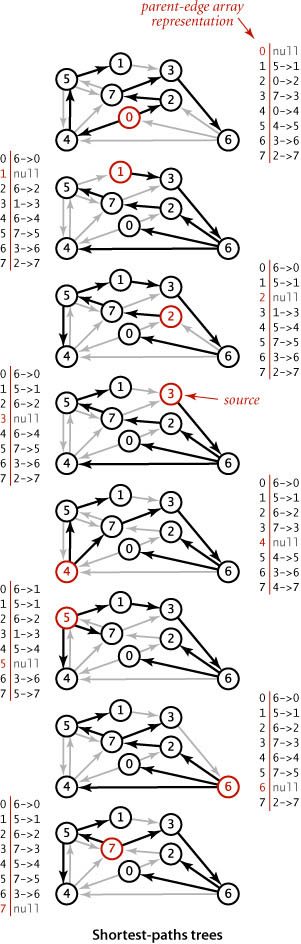
We focus on the single-source shortest-paths problem, where we are given a source vertex s. The result of the computation is a tree known as the shortest-paths tree (SPT), which gives a shortest path from s to every vertex reachable from s.
Such a tree always exists: in general there may be two paths of the same length connecting s to a vertex; if that is the case, we can delete the final edge on one of them, continuing until we have only one path connecting the source to each vertex (a rooted tree). By building a shortest-paths tree, we can provide clients with the shortest path from s to any vertex in the graph, using a parent-link representation, in precisely the same manner as for paths in graphs in SECTION 4.1.
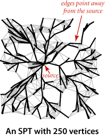
Our data type for directed edges is simpler than for undirected edges because we follow directed edges in just one direction. Instead of the either() and other() methods in Edge, we have from() and to() methods:
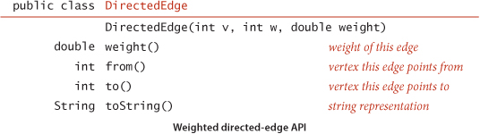
As with our transition from Graph to EdgeWeightedGraph from SECTION 4.1 to SECTION 4.3, we include an edges() method and use DirectedEdge instead of integers:
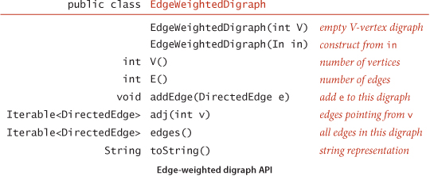
You can find implementations of these two APIs on the following two pages. These are natural extensions of the implementations of SECTION 4.2 and SECTION 4.3. Instead of the adjacency lists of integers used in Digraph, we have adjacency lists of DirectedEdge objects in EdgeWeightedDigraph. As with the transition from Graph to Digraph from SECTION 4.1 to SECTION 4.2, the transition from EdgeWeightedGraph in SECTION 4.3 to EdgeWeightedDigraph in this section simplifies the code, since each edge appears only once in the data structure.
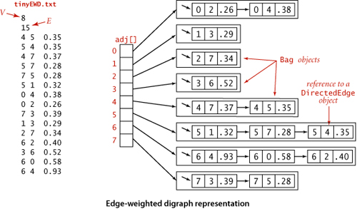
The figure above shows the data structure that EdgeWeightedDigraph builds to represent the digraph defined by the edges at left when they are added in the order they appear. As usual, we use Bag to represent adjacency lists and depict them as linked lists, the standard representation. As with the unweighted digraphs of SECTION 4.2, only one representation of each edge appears in the data structure.
For shortest paths, we use the same design paradigm as for the DepthFirstPaths and BreadthFirstPaths APIs in SECTION 4.1. Our algorithms implement the following API to provide clients with shortest paths and their lengths:
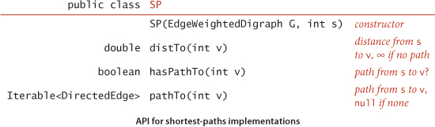
The constructor builds the shortest-paths tree and computes shortest-paths distances; the client query methods use those data structures to provide distances and iterable paths to the client.
A sample client is shown below. It takes an input stream and source vertex index as command-line arguments, reads the edge-weighted digraph from the input stream, computes the SPT of that digraph for the source, and prints the shortest path from the source to each of the other vertices. We assume that all of our shortest-paths implementations include this test client. Our examples use the file tinyEWD.txt shown on the facing page, which defines the edges and weights that are used in the small sample digraph that we use for detailed traces of shortest-paths algorithms. It uses the same file format that we used for MST algorithms: the number of vertices V and the number of edges E followed by E lines, each with two vertex indices and a weight. You can also find on the booksite files that define several larger edge-weighted digraphs, including the file mediumEWD.txt which defines the 250-vertex graph drawn on page 640. In the drawing of the graph, every line represents edges in both directions, so this file has twice as many lines as the corresponding file mediumEWG.txt that we examined for MSTs. In the drawing of the SPT, each line represents a directed edge pointing away from the source.
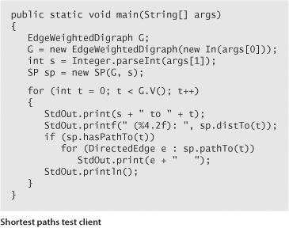
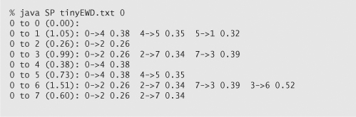
The data structures that we need to represent shortest paths are straightforward:
• Edges on the shortest-paths tree: As for DFS, BFS, and Prim’s algorithm, we use a parent-edge representation in the form of a vertex-indexed array edgeTo[] of DirectedEdge objects, where edgeTo[v] is edge that connects v to its parent in the tree (the last edge on a shortest path from s to v).
• Distance to the source: We use a vertex-indexed array distTo[] such that distTo[v] is the length of the shortest known path from s to v.
By convention, edgeTo[s] is null and distTo[s] is 0. We also adopt the convention that distances to vertices that are not reachable from the source are all Double.POSITIVE_INFINITY. As usual, we will develop data types that build these data structures in the constructor and then support instance methods that use them to support client queries for shortest paths and shortest-path distances.
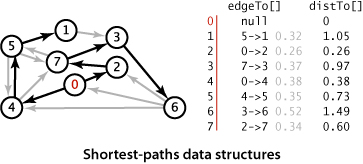
Our shortest-paths implementations are based on a simple operation known as relaxation. We start knowing only the graph’s edges and weights, with the distTo[] entry for the source initialized to 0 and all of the other distTo[] entries initialized to Double.POSITIVE_INFINITY. As an algorithm proceeds, it gathers information about the shortest paths that connect the source to each vertex encountered in our edgeTo[] and distTo[] data structures. By updating this information when we encounter edges, we can make new inferences about shortest paths. Specifically, we use edge relaxation, defined as follows: to relax an edge v->w means to test whether the best known way from s to w is to go from s to v, then take the edge from v to w, and, if so, update our data structures to indicate that to be the case. The code at the right implements this operation. The best known distance to w through v is the sum of distTo[v] and e.weight()—if that value is not smaller than distTo[w], we say the edge is ineligible, and we ignore it; if it is smaller, we update the data structures. The figure at the bottom of this page illustrates the two possible outcomes of an edge-relaxation operation. Either the edge is ineligible (as in the example at left) and no changes are made, or the edge v->w leads to a shorter path to w (as in the example at right) and we update edgeTo[w] and distTo[w] (which might render some other edges ineligible and might create some new eligible edges). The term relaxation follows from the idea of a rubber band stretched tight on a path connecting two vertices: relaxing an edge is akin to relaxing the tension on the rubber band along a shorter path, if possible. We say that an edge e can be successfully relaxed if relax() would change the values of distTo[e.to()] and edgeTo[e.to()].
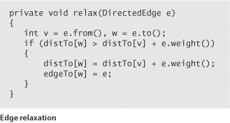
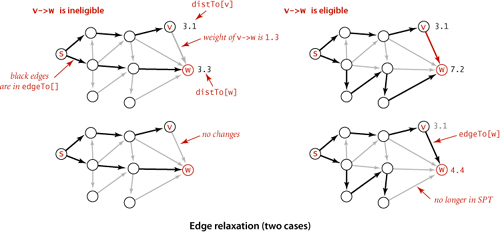
All of our implementations actually relax all the edges pointing from a given vertex as shown in the (overloaded) implementation of relax() below. Note that any edge from a vertex whose distTo[v] entry is finite to a vertex whose distTo[] entry is infinite is eligible and will be added to edgeTo[] if relaxed. In particular, some edge leaving the source is the first to be added to edgeTo[]. Our algorithms choose vertices judiciously, so that each vertex relaxation finds a shorter path than the best known so far to some vertex, incrementally progressing toward the goal of finding shortest paths to every vertex.
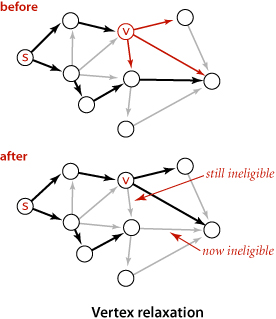
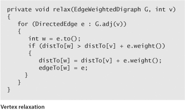
In a manner similar to our implementations for pathfinding APIs in SECTION 4.1 (and EXERCISE 4.1.13), the edgeTo[] and distTo[] data structures directly support the pathTo(), hasPathTo(), and distTo() client query methods, as shown below. This code is included in all of our shortest-paths implementations. As we have noted already, distTo[v] is only meaningful when v is reachable from s and we adopt the convention that distTo() should return infinity for vertices that are not reachable from s. To implement this convention, we initialize all distTo[] entries to Double.POSITIVE_INFINITY and distTo[s] to 0; then our shortest-paths implementations will set distTo[v] to a finite value for all vertices v that are reachable from the source. Thus, we can dispense with the marked[] array that we normally use to mark reachable vertices in a graph search and implement hasPathTo(v) by testing whether distTo[v] equals Double.POSITIVE_INFINITY. For pathTo(), we use the convention that pathTo(v) returns null if v is not reachable from the source and a path with no edges if v is the source. For reachable vertices, we travel up the tree, pushing the edges that we find on a stack, in the same manner as we did for DepthFirstPaths and BreadthFirstPaths. The figure at right shows the discovery of the path 0->2->7->3->6 for our example.
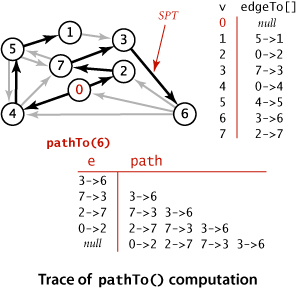
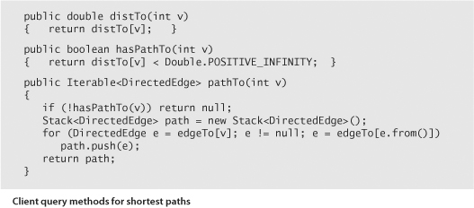
Edge relaxation is an easy-to-implement fundamental operation that provides a practical basis for our shortest-paths implementations. It also provides a theoretical basis for understanding the algorithms and an opportunity for us to do our algorithm correctness proofs at the outset.
The following proposition shows an equivalence between the global condition that the distances are shortest-paths distances, and the local condition that we test to relax an edge.
An important practical consequence of PROPOSITION P is its applicability to certification. However an algorithm computes distTo[], we can check whether it contains shortest-path lengths in a single pass through the edges of the graph, checking whether the optimality conditions are satisfied. Shortest-paths algorithms can be complicated, and this ability to efficiently test their outcome is crucial. We include a method check() in our implementations on the booksite for this purpose. This method also checks that edgeTo[] specifies paths from the source and is consistent with distTo[].
The optimality conditions lead immediately to a generic algorithm that encompasses all of the shortest-paths algorithms that we consider. For the moment, we restrict attention to nonnegative weights.
The key reason for considering the optimality conditions and the generic algorithm is that the generic algorithm does not specify in which order the edges are to be relaxed. Thus, all that we need to do to prove that any algorithm computes shortest paths is to prove that it relaxes edges until no edge is eligible.
In SECTION 4.3, we discussed Prim’s algorithm for finding the minimum spanning tree (MST) of an edge-weighted undirected graph: we build the MST by attaching a new edge to a single growing tree at each step. Dijkstra’s algorithm is an analogous scheme to compute an SPT. We begin by initializing dist[s] to 0 and all other distTo[] entries to positive infinity, then we relax and add to the tree a non-tree vertex with the lowest distTo[] value, continuing until all vertices are on the tree or no non-tree vertex has a finite distTo[] value.
To implement Dijkstra’s algorithm we add to our distTo[] and edgeTo[] data structures an index priority queue pq to keep track of vertices that are candidates for being the next to be relaxed. Recall that an IndexMinPQ allows us to associate indices with keys (priorities) and to remove and return the index corresponding to the lowest key. For this application, we always associate a vertex v with distTo[v], and we have a direct and immediate implementation of Dijkstra’s algorithm as stated. Moreover, it is immediate by induction that the edgeTo[] entries corresponding to reachable vertices form a tree, the SPT.
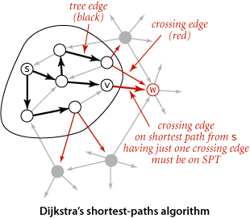
Another way to understand the dynamics of the algorithm derives from the proof, diagrammed at left: we have the invariant that distTo[] entries for tree vertices are shortest-paths distances and for each vertex w on the priority queue, distTo[w] is the weight of a shortest path from s to w that uses only intermediate vertices in the tree and ends in the crossing edge edgeTo[w]. The distTo[] entry for the vertex with the smallest priority is a shortest-path weight, not smaller than the shortest-path weight to any vertex already relaxed, and not larger than the shortest-path weight to any vertex not yet relaxed. That vertex is next to be relaxed. Reachable vertices are relaxed in order of the weight of their shortest path from s.
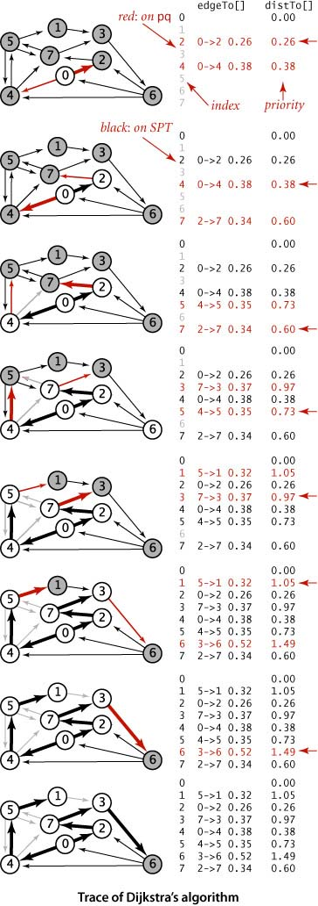
The figure at right is a trace for our small sample graph tinyEWD.txt. For this example, the algorithm builds the SPT as follows:
• Adds 0 to the tree and its adjacent vertices 2 and 4 to the priority queue.
• Removes 2 from the priority queue, adds 0->2 to the tree, and adds 7 to the priority queue.
• Removes 4 from the priority queue, adds 0->4 to the tree, and adds 5 to the priority queue. Edge 4->7 is ineligible.
• Removes 7 from the priority queue, adds 2->7 to the tree, and adds 3 to the priority queue. Edge 7->5 is ineligible.
• Removes 5 from the priority queue, adds 4->5 to the tree, and adds 1 to the priority queue. Edge 5->7 is ineligible.
• Removes 3 from the priority queue, adds 7->3 to the tree, and adds 6 to the priority queue.
• Removes 1 from the priority queue and adds 5->1 to the tree. Edge 1->3 is ineligible.
• Removes 6 from the priority queue and adds 3->6 to the tree.
Vertices are added to the SPT in increasing order of their distance from the source, as indicated by the red arrows at the right edge of the diagram.
The implementation of Dijkstra’s algorithm in DijkstraSP (ALGORITHM 4.9) is a rendition in code of the one-sentence description of the algorithm, enabled by adding one statement to relax() to handle two cases: either the to() vertex on an edge is not yet on the priority queue, in which case we use insert() to add it to the priority queue, or it is already on the priority queue and its priority lowered, in which case change() does so.
AS WE HAVE INDICATED, ANOTHER WAY TO THINK ABOUT Dijkstra’s algorithm is to compare it to Prim’s MST algorithm from SECTION 4.3 (see page 622). Both algorithms build a rooted tree by adding an edge to a growing tree: Prim’s adds next the non-tree vertex that is closest to the tree; Dijkstra’s adds next the non-tree vertex that is closest to the source. The marked[] array is not needed, because the condition !marked[w] is equivalent to the condition that distTo[w] is infinite. In other words, switching to undirected graphs and edges and omitting the references to distTo[v] in the relax() code in ALGORITHM 4.9 gives an implementation of ALGORITHM 4.7, the eager version of Prim’s algorithm (!). Also, a lazy version of Dijkstra’s algorithm along the lines of LazyPrimMST (page 619) is not difficult to develop.
Our implementation of Dijkstra’s algorithm, with suitable modifications, is effective for solving other versions of the problem, such as the following:
Single-source shortest paths in undirected graphs. Given an edge-weighted undirected graph and a source vertex s, support queries of the form Is there a path from s to a given target vertex v? If so, find a shortest such path (one whose total weight is minimal).
The solution to this problem is immediate if we view the undirected graph as a digraph. That is, given an undirected graph, build an edge-weighted digraph with the same vertices and with two directed edges (one in each direction) corresponding to each edge in the graph. There is a one-to-one correspondence between paths in the digraph and paths in the graph, and the costs of the paths are the same—the shortest-paths problems are equivalent.
Source-sink shortest paths. Given an edge-weighted digraph, a source vertex s, and a target vertex t, find the shortest path from s to t.
To solve this problem, use Dijkstra’s algorithm, but terminate the search as soon as t comes off the priority queue.
All-pairs shortest paths. Given an edge-weighted digraph, support queries of the form Given a source vertex s and a target vertex t, is there a path from s to t? If so, find a shortest such path (one whose total weight is minimal).
The surprisingly compact implementation at right below solves the all-pairs shortest paths problem, using time and space proportional to E V log V. It builds an array of DijkstraSP objects, one for each vertex as the source. To answer a client query, it uses the source to access the corresponding single-source shortest-paths object and then passes the target as argument to the query.
Shortest paths in Euclidean graphs. Solve the single-source, source-sink, and all-pairs shortest-paths problems in graphs where vertices are points in the plane and edge weights are proportional to Euclidean distances between vertices.
A simple modification considerably speeds up Dijkstra’s algorithm in this case (see EXERCISE 4.4.27).
THE FIGURES ON THE FACING PAGE show the emergence of the SPT as computed by Dijkstra’s algorithm for the Euclidean graph defined by our test file mediumEWD.txt (see page 645) for several different sources. Recall that line segments in this graph represent directed edges in both directions. Again, these figures illustrate a fascinating dynamic process.
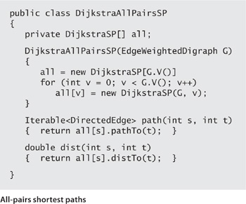
Next, we consider shortest-paths algorithms for acyclic edge-weighted graphs, where we can solve the problem in linear time (faster than Dijkstra’s algorithm) and then for edge-weighted digraphs with negative weights, where Dijkstra’s algorithm does not apply.
For many natural applications, edge-weighted digraphs are known to have no directed cycles. For economy, we use the equivalent term edge-weighted DAG to refer to an acyclic edge-weighted digraph. We now consider an algorithm for finding shortest paths that is simpler and faster than Dijkstra’s algorithm for edge-weighted DAGs. Specifically, it
• Solves the single-source problem in linear time
• Handles negative edge weights
• Solves related problems, such as finding longest paths.
These algorithms are straightforward extensions to the algorithm for topological sort in DAGs that we considered in SECTION 4.2.
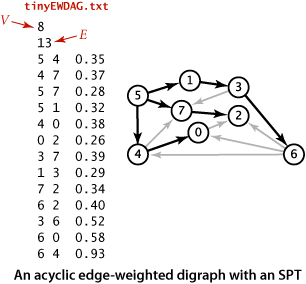
Specifically, vertex relaxation, in combination with topological sorting, immediately presents a solution to the single-source shortest-paths problem for edge-weighted DAGs. We initialize distTo[s] to 0 and all other distTo[] values to infinity, then relax the vertices, one by one, taking the vertices in topological order. An argument similar to (but simpler than) the argument that we used for Dijkstra’s algorithm on page 652 establishes the effectiveness of this method:
The figure at right is a trace for a sample acyclic edge-weighted digraph tinyEWDAG.txt. For this example, the algorithm builds the shortest-paths tree from vertex 5 as follows:
• Does a DFS to discover the topological order 5 1 3 6 4 7 0 2.
• Adds to the tree 5 and all edges leaving it.
• Adds to the tree 1 and 1->3.
• Adds to the tree 3 and 3->6, but not 3->7, which is ineligible.
• Adds to the tree 6 and edges 6->2 and 6->0, but not 6->4, which is ineligible.
• Adds to the tree 4 and 4->0, but not 4->7, which is ineligible. Edge 6->0 becomes ineligible.
• Adds to the tree 7 and 7->2. Edge 6->2 becomes ineligible.
• Adds 0 to the tree, but not its incident edge 0->2, which is ineligible.
• Adds 2 to the tree.
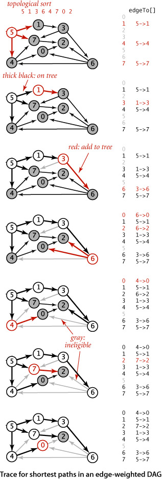
The addition of 2 to the tree is not depicted; the last vertex in a topological sort has no edges leaving it.
The implementation, shown in ALGORITHM 4.10, is a straightforward application of code we have already considered. It assumes that Topological has overloaded methods for the topological sort, using the EdgeWeightedDigraph and DirectedEdge APIs of this section (see EXERCISE 4.4.12). Note that our boolean array marked[] is not needed in this implementation: since we are processing vertices in an acyclic digraph in topological order, we never re-encounter a vertex that we have already relaxed. ALGORITHM 4.10 could hardly be more efficient: after the topological sort, the constructor scans the graph, relaxing each edge exactly once. It is the method of choice for finding shortest paths in edge-weighted graphs that are known to be acyclic.
PROPOSITION S is significant because it provides a concrete example where the absence of cycles considerably simplifies a problem. For shortest paths, the topological-sort-based method is faster than Dijkstra’s algorithm by a factor proportional to the cost of the priority-queue operations in Dijkstra’s algorithm. Moreover, the proof of PROPOSITION S does not depend on the edge weights being nonnegative, so we can remove that restriction for edge-weighted DAGs. Next, we consider implications of this ability to allow negative edge weights, by considering the use of the shortest-paths model to solve two other problems, one of which seems at first blush to be quite removed from graph processing.
Consider the problem of finding the longest path in an edge-weighted DAG with edge weights that may be positive or negative.
Single-source longest paths in edge-weighted DAGs. Given an edge-weighted DAG (with negative weights allowed) and a source vertex s, support queries of the form: Is there a directed path from s to a given target vertex v? If so, find a longest such path (one whose total weight is maximal).
The algorithm just considered provides a quick solution to this problem:
Using this transformation to develop a class AcyclicLP that finds longest paths in edge-weighted DAGs is straightforward. An even simpler way to implement such a class is to copy AcyclicSP, then switch the distTo[] initialization to Double.NEGATIVE_INFINITY and switch the sense of the inequality in relax(). Either way, we get an efficient solution to the longest-paths problem in edge-weighted DAGs. This result is to be compared with the fact that the best known algorithm for finding longest simple paths in general edge-weighted digraphs (where edge weights may be negative) requires exponential time in the worst case (see CHAPTER 6)! The possibility of cycles seems to make the problem exponentially more difficult.
The figure at right is a trace of the process of finding longest paths in our sample edge-weighted DAG tinyEWDAG.txt, for comparison with the shortest-paths trace for the same DAG on page 659. For this example, the algorithm builds the longest-paths tree (LPT) from vertex 5 as follows:
• Does a DFS to discover the topological order 5 1 3 6 4 7 0 2.
• Adds to the tree 5 and all edges leaving it.
• Adds to the tree 1 and 1->3.
• Adds to the tree 3 and edges 3->6 and 3->7. Edge 5->7 becomes ineligible.
• Adds to the tree 6 and edges 6->2, 6->4, and 6->0.
• Adds to the tree 4 and edges 4->0 and 4->7. Edges 6->0 and 3->7 become ineligible.
• Adds to the tree 7 and 7->2. Edge 6->2 becomes ineligible
• Adds 0 to the tree, but not 0->2, which is ineligible.
• Adds 2 to the tree (not depicted).
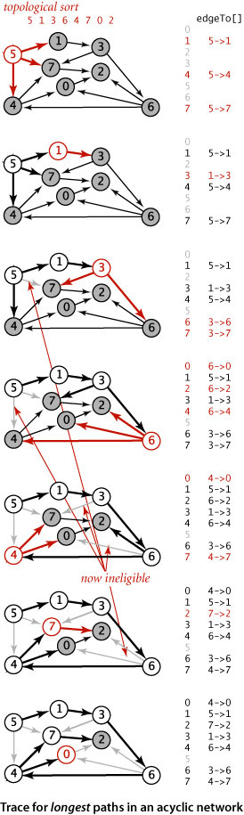
The longest-paths algorithm processes the vertices in the same order as the shortest-paths algorithm but produces a completely different result.
As an example application, we revisit the class of scheduling problems that we first considered in SECTION 4.2 (page 574). Specifically, consider the following scheduling problem (differences from the problem on page 575 are italicized):
Parallel precedence-constrained scheduling. Given a set of jobs of specified duration to be completed, with precedence constraints that specify that certain jobs have to be completed before certain other jobs are begun, how can we schedule the jobs on identical processors (as many as needed) such that they are all completed in the minimum amount of time while still respecting the constraints?
Implicit in the model of SECTION 4.2 is a single processor: we schedule the jobs in topological order and the total time required is the total duration of the jobs. Now, we assume that we have sufficient processors to perform as many jobs as possible, limited only by precedence constraints. Again, thousands or even millions of jobs might be involved, so we require an efficient algorithm. Remarkably, a linear-time algorithm is available—an approach known as the critical path method demonstrates that the problem is equivalent to a longest-paths problem in an edge-weighted DAG. This method has been used successfully in countless industrial applications.
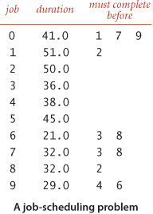
We focus on the earliest possible time that we can schedule each job, assuming that any available processor can handle the job for its duration. For example, consider the problem instance specified in the table at right. The solution below shows that 173.0 is the minimum possible completion time for any schedule for this problem: the schedule satisfies all the constraints, and no schedule can complete before time 173.0 because of the job sequence 0->9->6->8->2. This sequence is known as a critical path for this problem. Every sequence of jobs, each constrained to follow the job just preceding it in the sequence, represents a lower bound on the length of the schedule. If we define the length of such a sequence to be its earliest possible completion time (total of the durations of its jobs), the longest sequence is known as a critical path because any delay in the starting time of any job delays the best achievable completion time of the entire project.
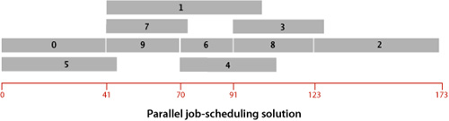
The figure at the top of this page depicts this correspondence for our sample problem, and the figure at the bottom of the page gives the longest-paths solution. As specified, the graph has three edges for each job (zero-weight edges from the source to the start and from the finish to the sink, and an edge from start to finish) and one edge for each precedence constraint. The class CPM on the facing page is a straightforward implementation of the critical path method. It transforms any instance of the job-scheduling problem into an instance of the longest-paths problem in an edge-weighted DAG, uses AcyclicLP to solve it, then prints the job start times and schedule finish time.
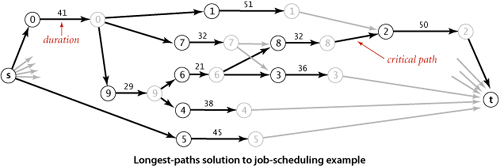
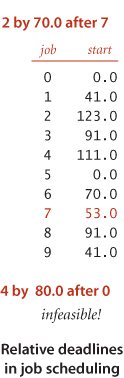
Conventional deadlines are relative to the start time of the first job. Suppose that we allow an additional type of constraint in the job-scheduling problem to specify that a job must begin before a specified amount of time has elapsed, relative to the start time of another job. Such constraints are commonly needed in time-critical manufacturing processes and in many other applications, but they can make the job-scheduling problem considerably more difficult to solve. For example, as shown at left, suppose that we need to add a constraint to our example that job 2 must start no later than 12 time units after job 4 starts. This deadline is actually a constraint on the start time of job 4: it must be no earlier than 12 time units before the start time of job 2. In our example, there is room in the schedule to meet the deadline: we can move the start time of job 4 to 111, 12 time units before the scheduled start time of job 2. Note that, if job 4 were a long job, this change would increase the finish time of the whole schedule. Similarly, if we add to the schedule a deadline that job 2 must start no later than 70 time units after job 7 starts, there is room in the schedule to change the start time of job 7 to 53, without having to reschedule jobs 3 and 8. But if we add a deadline that job 4 must start no later than 80 time units after job 0, the schedule becomes infeasible: the constraints that 4 must start no more than 80 time units after job 0 and that job 2 must start no more than 12 units after job 4 imply that job 2 must start no more than 93 time units after job 0, but job 2 must start at least 123 time units after job 0 because of the chain 0 (41 time units) precedes 9 (29 time units) precedes 6 (21 time units) precedes 8 (32 time units) precedes 2. Adding more deadlines of course multiplies the possibilities and turns an easy problem into a difficult one.
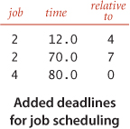
This example illustrates that negative weights can play a critical role in practical application models. It says that if we can find an efficient solution to the shortest-paths problem with negative weights, then we can find an efficient solution to the parallel job scheduling problem with relative deadlines. Neither of the algorithms we have considered can do the job: Dijkstra’s algorithm requires that weights be positive (or zero), and ALGORITHM 4.10 requires that the digraph be acyclic. Next, we consider the problem of coping with negative edge weights in digraphs that are not necessarily acyclic.
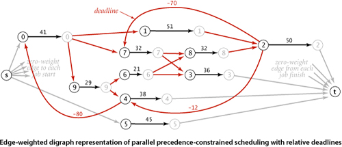
Our job-scheduling-with-deadlines example just discussed demonstrates that negative weights are not merely a mathematical curiosity; on the contrary, they significantly extend the applicability of the shortest-paths problem as a problem-solving model. Accordingly we now consider algorithms for edge-weighted digraphs that may have both cycles and negative weights. Before doing so, we consider some basic properties of such digraphs to reset our intuition about shortest paths. The figure at left is a small example that illustrates the effects of introducing negative weights on a digraph’s shortest paths. Perhaps the most important effect is that when negative weights are present, low-weight shortest paths tend to have more edges than higher-weight paths. For positive weights, our emphasis was on looking for shortcuts; but when negative weights are present, we seek detours that use negative-weight edges. This effect turns our intuition in seeking “short” paths into a liability in understanding the algorithms, so we need to suppress that line of intuition and consider the problem on a basic abstract level.
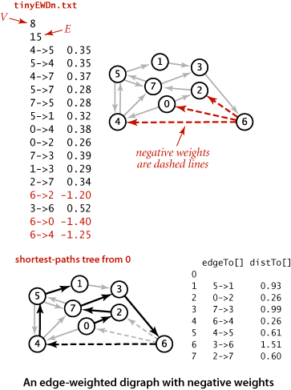
The first idea that suggests itself is to find the smallest (most negative) edge weight, then to add the absolute value of that number to all the edge weights to transform the digraph into one with no negative weights. This naive approach does not work at all, because shortest paths in the new digraph bear little relation to shortest paths in the old one. The more edges a path has, the more it is penalized by this transformation (see EXERCISE 4.4.14).
The second idea that suggests itself is to try to adapt Dijkstra’s algorithm in some way. The fundamental difficulty with this approach is that the algorithm depends on examining paths in increasing order of their distance from the source. The proof in PROPOSITION R that the algorithm is correct assumes that adding an edge to a path makes that path longer. But any edge with negative weight makes the path shorter, so that assumption is unfounded (see EXERCISE 4.4.14).
When we consider digraphs that could have negative edge weights, the concept of a shortest path is meaningless if there is a cycle in the digraph that has negative weight. For example, consider the digraph at left, which is identical to our first example except that edge 5->4 has weight -.66. Then, the weight of the cycle 4->7->5->4 is
37+.28-.66 = -.01
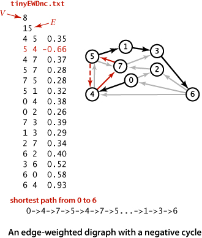
We can spin around that cycle to generate arbitrarily short paths! Note that it is not necessary for all the edges on a directed cycle to be of negative weight; what matters is the sum of the edge weights.
Now, suppose that some vertex on a path from s to a reachable vertex v is also on a negative cycle. In this case, the existence of a shortest path from s to v would be a contradiction, because we could use the cycle to construct a path with weight lower than any given value. In other words, shortest paths can be an ill-posed problem if negative cycles are present.
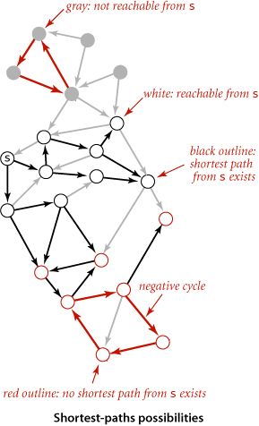
Note that the requirement that shortest paths have no vertices on negative cycles implies that shortest paths are simple and that we can compute a shortest-paths tree for such vertices, as we have done for positive edge weights.
Whether or not there are negative cycles, there exists a shortest simple path connecting the source to each vertex reachable from the source. Why not define shortest paths so that we seek such paths? Unfortunately, the best known algorithm for solving this problem takes exponential time in the worst case (see CHAPTER 6). Generally, we consider such problems “too difficult to solve” and study simpler versions.
THUS, A WELL-POSED AND TRACTABLE VERSION of the shortest paths problem in edge-weighted digraphs is to require algorithms to
• Assign a shortest-path weight of +∞ to vertices that are not reachable from the source
• Assign a shortest-path weight of −∞ to vertices that are on a path from the source that has a vertex that is on a negative cycle
• Compute the shortest-path weight (and tree) for all other vertices
Throughout this section, we have been placing restrictions on the shortest-paths problem so that we can develop algorithms to solve it. First, we disallowed negative weights, then we disallowed directed cycles. We now adopt these less stringent restrictions and focus on the following problems in general digraphs:
Negative cycle detection. Does a given edge-weighted digraph have a negative cycle? If it does, find one such cycle.
Single-source shortest paths when negative cycles are not reachable. Given an edge-weighted digraph and a source s with no negative cycles reachable from s, support queries of the form Is there a directed path from s to a given target vertex v? If so, find a shortest such path (one whose total weight is minimal).
TO SUMMARIZE: while shortest paths in digraphs with directed cycles is an ill-posed problem and we cannot efficiently solve the problem of finding simple shortest paths in such digraphs, we can identify negative cycles in practical situations. For example, in a job-scheduling-with-deadlines problem, we might expect negative cycles to be relatively rare: constraints and deadlines derive from logical real-world constraints, so any negative cycles are likely to stem from an error in the problem statement. Finding negative cycles, correcting errors, and then finding the schedule in a problem with no negative cycles is a reasonable way to proceed. In other cases, finding a negative cycle is the goal of the computation. The following approach, developed by R. Bellman and L. Ford in the late 1950s, provides a simple and effective basis for attacking both of these problems and is also effective for digraphs with positive weights:
This method is very general, since it does not specify the order in which the edges are relaxed. We now restrict attention to a less general method where we always relax all the edges leaving any vertex (in any order). The following code exhibits the simplicity of the approach:
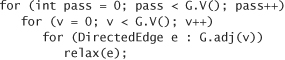
We do not consider this version in detail because it always relaxes VE edges, and a simple modification makes the algorithm much more efficient for typical applications.
Specifically, we can easily determine a priori that numerous edges are not going to lead to a successful relaxation in any given pass: the only edges that could lead to a change in distTo[] are those leaving a vertex whose distTo[] value changed in the previous pass. To keep track of such vertices, we use a FIFO queue. The operation of the algorithm for our standard example with positive weights is shown at right. Shown at the left of the figure are the queue entries for each pass (in red), followed by the queue entries for the next pass (in black). We start with the source on the queue and then compute the SPT as follows:
• Relax 1->3 and put 3 on the queue.
• Relax 3->6 and put 6 on the queue.
• Relax 6->4, 6->0, and 6->2 and put 4, 0, and 2 on the queue.
• Relax 4->7 and 4->5 and put 7 and 5 on the queue. Then relax 0->4 and 0->2, which are ineligible. Then relax 2->7 (and recolor 4->7).
• Relax 7->5 (and recolor 4->5) but do not put 5 on the queue (it is already there). Then relax 7->3, which is ineligible. Then relax 5->1, 5->4, and 5->7, which are ineligible, leaving the queue empty.
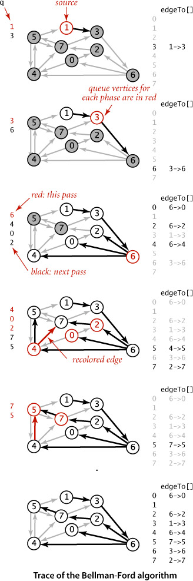
Implementing the Bellman-Ford algorithm along these lines requires remarkably little code, as shown in ALGORITHM 4.11. It is based on two additional data structures:
• A queue q of vertices to be relaxed
• A vertex-indexed boolean array onQ[] that indicates which vertices are on the queue, to avoid duplicates
We start by putting the source s on the queue, then enter a loop where we take a vertex off the queue and relax it. To add vertices to the queue, we augement our relax() implementation from page 646 to put the vertex pointed to by any edge that successfully relaxes onto the queue, as shown in the code at right. The data structures ensure that
• Only one copy of each vertex appears on the queue
• Every vertex whose edgeTo[] and distTo[] values change in some pass is processed in the next pass
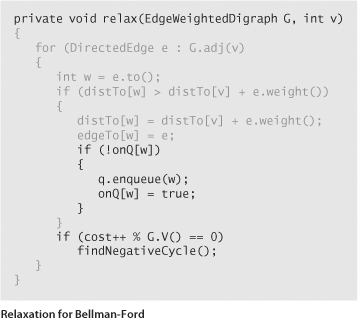
To complete the implementation, we need to ensure that the algorithm terminates after V passes. One way to achieve this end is to explicitly keep track of the passes. Our implementation BellmanFordSP (ALGORITHM 4.11) uses a different approach that we will consider in detail on page 677: it checks for negative cycles in the subset of digraph edges in edgeTo[] and terminates if it finds one.
The queue-based Bellman-Ford algorithm is an effective and efficient method for solving the shortest-paths problem that is widely used in practice, even for the case when edge weights are positive. For example, as shown in the diagram at right, our 250-vertex example is complete in 14 passes and requires fewer path-length compares than Dijkstra’s algorithm for the same problem.
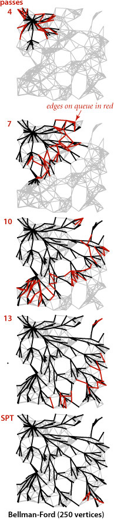
The example on the next page traces the progress of the Bellman-Ford algorithm in a digraph with negative weights. We start with the source on q and then compute the SPT as follows:
• Relax 0->2 and 0->4 and put 2 and 4 on the queue.
• Relax 2->7 and put 7 on the queue. Then relax 4->5 and put 5 on the queue. Then relax 4->7, which is ineligible.
• Relax 7->3 and 5->1 and put 3 and 1 on the queue. Then relax 5->4 and 5->7, which are ineligible.
• Relax 3->6 and put 6 on the queue. Then relax 1->3, which is ineligible.
• Relax 6->4 and put 4 on the queue. This negative-weight edge gives a shorter path to 4, so its edges must be relaxed again (they were first relaxed in pass 2). The distances to 5 and to 1 are no longer valid but will be corrected in later passes.
• Relax 4->5 and put 5 on the queue. Then relax 4->7, which is still ineligible.
• Relax 5->1 and put 1 on the queue. Then relax 5->4 and 5->7, which are both still ineligible.
• Relax 1->3, which is still ineligible, leaving the queue empty.
The shortest-paths tree for this example is a single long path from 0 to 1. The edges from 4, 5, and 1 are all relaxed twice for this example. Rereading the proof of PROPOSITION X in the context of this example is a good way to better understand it.
Our implementation BellmanFordSP checks for negative cycles to avoid an infinite loop. We can apply the code that does this check to provide clients with the capability to check for and extract negative cycles, as well. We do so by adding the following methods to the SP API on page 644:
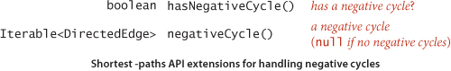
Implementing these methods is not difficult, as shown in the code below. After running the constructor in BellmanFordSP, the proof of PROPOSITION Y tells us that the digraph has a negative cycle reachable from the source if and only if the queue is nonempty after the Vth pass through all the edges. Moreover, the subgraph of edges in our edgeTo[] array must contain a negative cycle. Accordingly, to implement negativeCycle() we build an edge-weighted digraph from the edges in edgeTo[] and look for a cycle in that digraph. To find the cycle, we use a version of DirectedCycle from SECTION 4.3, adapted to work for edge-weighted digraphs (see EXERCISE 4.4.12). We amortize the cost of this check by
• Adding an instance variable cycle and a private method findNegativeCycle() that sets cycle to an iterator for the edges of a negative cycle if one is found (and to null if none is found)
• Calling findNegativeCycle() every Vth call to relax()
This approach ensures that the loop in the constructor terminates. Moreover, clients can call hasNegativeCycle() to learn whether there is a negative cycle reachable from the source (and negativeCycle() to get one such cycle. Adding the capability to detect any negative cycle in the digraph is also a simple extension (see EXERCISE 4.4.43).
The example below traces the progress of the Bellman-Ford algorithm in a digraph with a negative cycle. The first two passes are the same as for tinyEWDn.txt. In the third pass, after relaxing 7->3 and 5->1 and putting 3 and 1 on queue, it relaxes the negative-weight edge 5->4. This relaxation discovers the negative cycle 4->5->4. It puts 5->4 on the tree and cuts the cycle off from the source 0 in edgeTo[]. From that point on, the algorithm spins through the cycle, lowering the distances to all the vertices touched, until finishing when the cycle is detected, with the queue not empty. The cycle is in the edgeTo[] array, for discovery by findNegativeCycle().
Consider a market for financial transactions that is based on trading commodities. You can find a familiar example in tables that show conversion rates among currencies, such as the one in our sample file rates.txt shown here. The first line in the file is the number V of currencies; then the file has one line per currency, giving its name followed by the conversion rates to the other currencies. For brevity, this example includes just five of the hundreds of currencies that are traded on modern markets: U.S. dollars (USD), Euros (EUR), British pounds (GBP), Swiss francs (CHF), and Canadian dollars (CAD). The tth number on line s represents a conversion rate: the number of units of the currency named on row t that can be bought with 1 unit of the currency named on row s. For example, our table says that 1,000 U.S. dollars will buy 741 euros. This table is equivalent to a complete edge-weighted digraph with a vertex corresponding to each currency and an edge corresponding to each conversion rate. An edge s->t with weight x corresponds to a conversion from s to t at exchange rate x. Paths in the digraph specify multistep conversions. For example, combining the conversion just mentioned with an edge t->u with weight y gives a path s->t->u that represents a way to convert 1 unit of currency s into xy units of currency u. For example, we might buy 1,012.206 = 741×1.366 Canadian dollars with our euros. Note that this gives a better rate than directly converting from U.S. dollars to Canadian dollars. You might expect xy to be equal to the weight of s->u in all such cases, but such tables represent a complex financial system where such consistency cannot be guaranteed. Thus, finding the path from s to u such that the product of the weights is maximal is certainly of interest. Even more interesting is a case where the product of the edge weights is smaller than the weight of the edge from the last vertex back to the first. In our example, suppose that the weight of u->s is z and xyz > 1. Then cycle s->t->u->s gives a way to convert 1 unit of currency s into more than 1 unit (xyz) of currency s. In other words, we can make a 100(xyz - 1) percent profit by converting from s to t to u back to s. For example, if we convert our 1,012.206 Canadian dollars back to US dollars, we get 1,012.206 × .995 = 1,007.14497 dollars, a 7.14497-dollar profit. That might not seem like much, but a currency trader might have 1 million dollars and be able to execute these transactions every minute, which would lead to profits of over $7,000 per minute, or $420,000 per hour! This situation is an example of an arbitrage opportunity that would allow traders to make unlimited profits were it not for forces outside the model, such as transaction fees or limitations on the size of transactions. Even with these forces, arbitrage is plenty profitable in the real world. What does this problem have to do with shortest paths? The answer to this question is remarkably simple:
In our example, where all transactions are possible, the digraph is a complete graph, so any negative cycle is reachable from any vertex. In general commodity exchanges, some edges may be absent, so the one-argument constructor described in EXERCISE 4.4.43 is needed. No efficient algorithm for finding the best arbitrage opportunity (the most negative cycle in a digraph) is known (and the graph does not have to be very big for this computational burden to be overwhelming), but the fastest algorithm to find any arbitrage opportunity is crucial—a trader with that algorithm is likely to systematically wipe out numerous opportunities before the second-fastest algorithm finds any.
THE TRANSFORMATION IN THE PROOF of PROPOSITION Z is useful even in the absence of arbitrage, because it reduces currency conversion to a shortest-paths problem. Since the logarithm function is monotonic (and we negated the logarithms), the product is maximized precisely when the sum is minimized. The edge weights might be negative or positive, and a shortest path from v to w gives a best way of converting from currency v to currency w.
The table below summarizes the important characteristics of the shortest-paths algorithms that we have considered in this section. The first reason to choose among the algorithms has to do with basic properties of the digraph at hand. Does it have negative weights? Does it have cycles? Does it have negative cycles? Beyond these basic characteristics, the characteristics of edge-weighted digraphs can vary widely, so choosing among the algorithms requires some experimentation when more than one can apply.
Shortest-paths problems have been intensively studied and widely used since the 1950s. The history of Dijkstra’s algorithm for computing shortest paths is similar (and related) to the history of Prim’s algorithm for computing the MST. The name Dijkstra’s algorithm is commonly used to refer both to the abstract method of building an SPT by adding vertices in order of their distance from the source and to its implementation as the optimal algorithm for the adjacency-matrix representation, because E. W. Dijkstra presented both in his 1959 paper (and also showed that the same approach could compute the MST). Performance improvements for sparse graphs are dependent on later improvements in priority-queue implementations that are not specific to the shortest-paths problem. Improved performance of Dijkstra’s algorithm is one of the most important applications of that technology (for example, with a data structure known as a Fibonacci heap, the worst-case bound can be reduced to E + V log V). The Bellman-Ford algorithm has proven to be useful in practice and has found wide application, particularly for general edge-weighted digraphs. While the running time of the Bellman-Ford algorithm is likely to be linear for typical applications, its worst-case running time is VE. The development of a worst-case linear-time shortest-paths algorithm for sparse graphs remains an open problem. The basic Bellman-Ford algorithm was developed in the 1950s by L. Ford and R. Bellman; despite the dramatic strides in performance that we have seen for many other graph problems, we have not yet seen algorithms with better worst-case performance for digraphs with negative edge weights (but no negative cycles).
Q. Why define separate data types for undirected graphs, directed graphs, edge-weighted undirected graphs, and edge-weighted digraphs?
A. We do so both for clarity in client code and for simpler and more efficient implementation code in unweighted graphs. In applications or systems where all types of graphs are to be processed, it is a textbook exercise in software engineering to define an ADT from which ADTs can be derived for Graph, the unweighted undirected graphs of SECTION 4.1; Digraph, the unweighted digraphs of SECTION 4.2; EdgeWeightedGraph, the edge-weighted undirected graphs of SECTION 4.3; or EdgeWeightedDigraph, the edge-weighted directed graphs of this section.
Q. How can we find shortest paths in undirected (edge-weighted) graphs?
A. For positive edge weights, Dijkstra’s algorithm does the job. We just build an EdgeWeightedDigraph corresponding to the given EdgeWeightedGraph (by adding two directed edges corresponding to each undirected edge, one in each direction) and then run Dijkstra’s algorithm. If edge weights can be negative, efficient algorithms are available, but they are more complicated than the Bellman-Ford algorithm.
4.4.1 True or false: Adding a constant to every edge weight does not change the solution to the single-source shortest-paths problem.
4.4.2 Provide an implementation of toString() for EdgeWeightedDigraph.
4.4.3 Develop an implementation of EdgeWeightedDigraph for dense graphs that uses an adjacency-matrix (two-dimensional array of weights) representation (see EXERCISE 4.3.9). Ignore parallel edges.
4.4.4 Draw the SPT for source 0 of the edge-weighted digraph obtained by deleting vertex 7 from tinyEWD.txt (see page 644), and give the parent-link representation of the SPT. Answer the question for the same graph with all edge reversed.
4.4.5 Change the direction of edge 0->2 in tinyEWD.txt (see page 644). Draw two different SPTs that are rooted at 2 for this modified edge-weighted digraph.
4.4.6 Give a trace that shows the process of computing the SPT of the digraph defined in EXERCISE 4.4.5 with the eager version of Dijkstra’s algorithm.
4.4.7 Develop a version of DijkstraSP that supports a client method that returns a second shortest path from s to t in an edge-weighted digraph (and returns null if there is only one shortest path from s to t).
4.4.8 The diameter of a digraph is the length of the maximum-length shortest path connecting two vertices. Write a DijkstraSP client that finds the diameter of a given EdgeWeightedDigraph that has nonnegative weights.
4.4.9 The table below, from an old published road map, purports to give the length of the shortest routes connecting the cities. It contains an error. Correct the table. Also, add a table that shows how to achieve the shortest routes.
4.4.10 Consider the edges in the digraph defined in EXERCISE 4.4.4 to be undirected edges such that each edge corresponds to equal-weight edges in both directions in the edge-weighted digraph. Answer EXERCISE 4.4.6 for this corresponding edge-weighted digraph.
4.4.11 Use the memory-cost model of SECTION 1.4 to determine the amount of memory used by EdgeWeightedDigraph to represent a graph with V vertices and E edges,.
4.4.12 Adapt the DirectedCycle and Topological classes from SECTION 4.2 to use the EdgeweightedDigraph and DirectedEdge APIs of this section, thus implementing EdgeWeightedDirectedCycle and Topological classes.
4.4.13 Show, in the style of the trace in the text, the process of computing the SPT with Dijkstra’s algorithm for the digraph obtained by removing the edge 5->7 from tinyEWD.txt (see page 644).
4.4.14 Show the paths that would be discovered by the two strawman approaches described on page 668 for the example tinyEWDn.txt shown on that page.
4.4.15 What happens to Bellman-Ford if there is a negative cycle on the path from s to v and then you call pathTo(v)?
4.4.16 Suppose that we convert an EdgeWeightedGraph into an EdgeWeightedDigraph by creating two DirectedEdge objects in the EdgeWeightedDigraph (one in each direction) for each Edge in the EdgeWeightedGraph (as described for Dijkstra’s algorithm in the Q&A on page 684) and then use the Bellman-Ford algorithm. Explain why this approach fails spectacularly.
4.4.17 What happens if you allow a vertex to be enqueued more than once in the same pass in the Bellman-Ford algorithm?
Answer: The running time of the algorithm can go exponential. For example, consider what happens for the complete edge-weighted digraph whose edge weights are all -1.
4.4.18 Write a CPM client that prints all critical paths.
4.4.19 Find the lowest-weight cycle (best arbitrage opportunity) in the example shown in the text.
4.4.20 Find a currency-conversion table online or in a newspaper. Use it to build an arbitrage table. Note: Avoid tables that are derived (calculated) from a few values and that therefore do not give sufficiently accurate conversion information to be interesting. Extra credit: Make a killing in the money-exchange market!
4.4.21 Show, in the style of the trace in the text, the process of computing the SPT with the Bellman-Ford algorithm for the edge-weighted digraph of EXERCISE 4.4.5.
4.4.22 Vertex weights. Show that shortest-paths computations in edge-weighted digraphs with nonnegative weights on vertices (where the weight of a path is defined to be the sum of the weights of the vertices) can be handled by building an edge-weighted digraph that has weights on only the edges.
4.4.23 Source-sink shortest paths. Develop an API and implementation that use a version of Dijkstra’s algorithm to solve the source-sink shortest path problem on edge-weighted digraphs.
4.4.24 Multisource shortest paths. Develop an API and implementation that uses Dijkstra’s algorithm to solve the multisource shortest-paths problem on edge-weighted digraphs with positive edge weights: given a set of sources, find a shortest-paths forest that enables implementation of a method that returns to clients the shortest path from any source to each vertex. Hint: Add a dummy vertex with a zero-weight edge to each source, or initialize the priority queue with all sources, with their distTo[] entries set to 0.
4.4.25 Shortest path between two subsets. Given a digraph with positive edge weights, and two distinguished subsets of vertices S and T, find a shortest path from any vertex in S to any vertex in T. Your algorithm should run in time proportional to E log V, in the worst case.
4.4.26 Single-source shortest paths in dense graphs. Develop a version of Dijkstra’s algorithm that can find the SPT from a given vertex in a dense edge-weighted digraph in time proportional to V2. Use an adjacency-matrix representation (see EXERCISE 4.4.3 and EXERCISE 4.3.29).
4.4.27 Shortest paths in Euclidean graphs. Adapt our APIs to speed up Dijkstra’s algorithm in the case where it is known that vertices are points in the plane.
4.4.28 Longest paths in DAGs. Develop an implementation AcyclicLP that can solve the longest-paths problem in edge-weighted DAGs, as described in PROPOSITION T.
4.4.29 General optimality. Complete the proof of PROPOSITION W by showing that if there exists a directed path from s to v and no vertex on any path from s to v is on a negative cycle, then there exists a shortest path from s to v (Hint: See PROPOSITION P.)
4.4.30 All-pairs shortest paths in diagraphs with negative cycles. Articulate an API like the one implemented on page 656 for the all-pairs shortest-paths problem in graphs with no negative cycles. Develop an implementation that runs a version of Bellman-Ford to identify weights pi[v] such that for any edge v->w, the edge weight plus the difference between pi[v] and pi[w] is nonnegative. Then use these weights to reweight the graph, so that Dijkstra’s algorithm is effective for finding all shortest paths in the reweighted graph.
4.4.31 All-pairs shortest paths on a line. Given a weighted line graph (undirected connected graph, all vertices of degree 2, except two endpoints which have degree 1), devise an algorithm that preprocesses the graph in linear time and can return the distance of the shortest path between any two vertices in constant time.
4.4.32 Parent-checking heuristic. Modify Bellman-Ford to visit a vertex v only if its SPT parent edgeTo[v] is not currently on the queue. This heuristic has been reported by Cherkassky, Goldberg, and Radzik to be useful in practice. Prove that it correctly computes shortest paths and that the worst-case running time is proportional to EV.
4.4.33 Shortest path in a grid. Given an N-by-N matrix of positive integers, find the shortest path from the (0, 0) entry to the (N−1, N−1) entry, where the length of the path is the sum of the integers in the path. Repeat the problem but assume you can only move right and down.
4.4.34 Monotonic shortest path. Given n edge-weighted digraph, find a monotonic shortest path from s to every other vertex. A path is monotonic if the weight of every edge on the path is either strictly increasing or strictly decreasing. Hint: Relax edges in ascending order and find a best path; then relax edges in descending order and find a best path.
4.4.35 Bitonic shortest path. Given an edge-weighted digraph, find a bitonic shortest path from s to every other vertex (if one exists). A path is bitonic if there is an intermediate vertex v such that the weighs of the edges on the path from s to v are strictly increasing and the weights of the edges on the path from v to t are strictly decreasing. The path should be simple (no repeated vertices).
4.4.36 Neighbors. Develop an SP client that finds all vertices within a given distance d of a given vertex in a given edge-weighted digraph. The running time of your method should be proportional to the size of the subgraph induced by those vertices and the vertices incident on them, or V (to initialize data structures), whichever is larger.
4.4.37 Critical edges. Develop an algorithm for finding an edge whose removal causes maximal increase in the shortest-paths length from one given vertex to another given vertex in a given edge-weighted digraph.
4.4.38 Sensitivity. Develop an SP client that performs a sensitivity analysis on the edge-weighted digraph’s edges with respect to a given pair of vertices s and t: Compute a V-by-V boolean matrix such that, for every v and w, the entry in row v and column w is true if v->w is an edge in the edge-weighted digraphs whose weight can be increased without the shortest-path length from v to w being increased and is false otherwise.
4.4.39 Lazy implementation of Dijkstra’s algorithm. Develop an implementation of the lazy version of Dijkstra’s algorithm that is described in the text.
4.4.40 Bottleneck SPT. Show that an MST of an undirected graph is equivalent to a bottleneck SPT of the graph: For every pair of vertices v and w, it gives the path connecting them whose longest edge is as short as possible.
4.4.41 Bidirectional search. Develop a class for the source-sink shortest-paths problem that is based on code like ALGORITHM 4.9 but that initializes the priority queue with both the source and the sink. Doing so leads to the growth of an SPT from each vertex; your main task is to decide precisely what to do when the two SPTs collide.
4.4.42 Worst case (Dijkstra). Describe a family of graphs with V vertices and E edges for which the worst-case running time of Dijkstra’s algorithm is achieved.
4.4.43 Negative cycle detection. Suppose that we add a constructor to ALGORITHM 4.11 that differs from the constructor given only in that it omits the second argument and that it initializes all distTo[] entries to 0. Show that, if a client uses that constructor, a client call to hasNegativeCycle() returns true if and only if the graph has a negative cycle (and negativeCycle() returns that cycle).
Answer: Consider a digraph formed from the original by adding a new source with an edge of weight 0 to all the other vertices. After one pass, all distTo[] entries are 0, and finding a negative cycle reachable from that source is the same as finding a negative cycle anywhere in the original graph.
4.4.44 Worst case (Bellman-Ford). Describe a family of graphs for which ALGORITHM 4.11 takes time proportional to VE.
4.4.45 Fast Bellman-Ford. Develop an algorithm that breaks the linearithmic running time barrier for the single-source shortest-paths problem in general edge-weighted digraphs for the special case where the weights are integers known to be bounded in absolute value by a constant.
4.4.46 Animate. Write a client program that does dynamic graphical animations of Dijkstra’s algorithm.
4.4.47 Random sparse edge-weighted digraphs. Modify your solution to EXERCISE 4.3.34 to assign a random direction to each edge.
4.4.48 Random Euclidean edge-weighted digraphs. Modify your solution to EXERCISE 4.3.35 to assign a random direction to each edge.
4.4.49 Random grid edge-weighted digraphs. Modify your solution to EXERCISE 4.3.36 to assign a random direction to each edge.
4.4.50 Negative weights I. Modify your random edge-weighted digraph generators to generate weights between x and y (where x and y are both between −1 and 1) by rescaling.
4.4.51 Negative weights II. Modify your random edge-weighted digraph generators to generate negative weights by negating a fixed percentage (whose value is supplied by the client) of the edge weights.
4.4.52 Negative weights III. Develop client programs that use your edge-weighted digraph to produce edge-weighted digraphs that have a large percentage of negative weights but have at most a few negative cycles, for as large a range of values of V and E as possible.
Testing all algorithms and studying all parameters against all edge-weighted digraph models is unrealistic. For each problem listed below, write a client that addresses the problem for any given input digraph, then choose among the generators above to run experiments for that graph model. Use your judgment in selecting experiments, perhaps in response to results of previous experiments. Write a narrative explaining your results and any conclusions that might be drawn.
4.4.53 Prediction. Estimate, to within a factor of 10, the largest graph with E = 10V that your computer and programming system could handle if you were to use Dijkstra’s algorithm to compute all its shortest paths in 10 seconds.
4.4.54 Cost of laziness. Run empirical studies to compare the performance of the lazy version of Dijkstra’s algorithm with the eager version, for various edge-weighted digraph models.
4.4.55 Johnson’s algorithm. Develop a priority-queue implementation that uses a d-way heap. Find the best value of d for various edge-weighted digraph models.
4.4.56 Arbitrage model. Develop a model for generating random arbitrage problems. Your goal is to generate tables that are as similar as possible to the tables that you used in EXERCISE 4.4.20.
4.4.57 Parallel job-scheduling-with-deadlines model. Develop a model for generating random instances of the parallel job-scheduling-with-deadlines problem. Your goal is to generate nontrivial problems that are likely to be feasible.